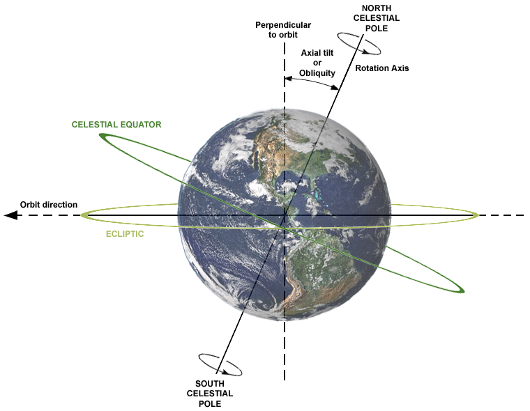
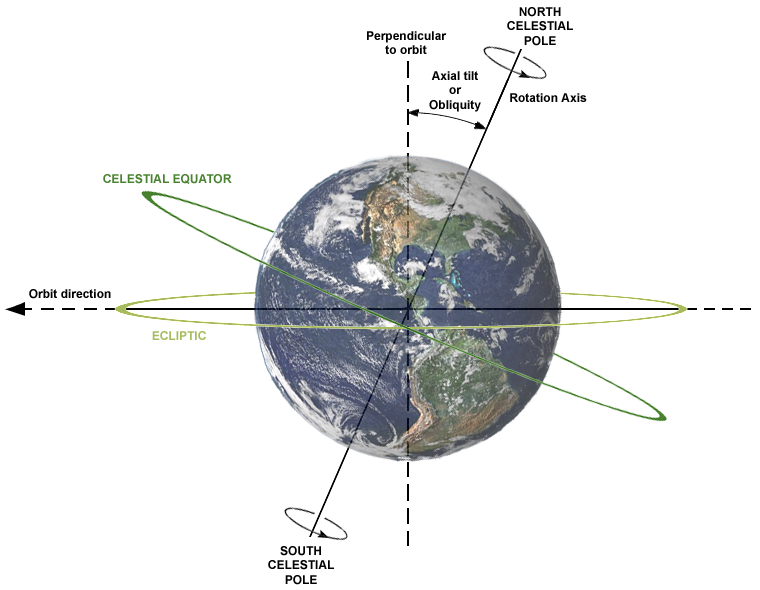

โลก
โลก (The Earth) เป็นดาวเคราะห์ดวงเดียวในระบบสุริยะที่มีสภาวะแวดล้อมเอื้ออำนวยต่อการดำรงชีวิตของสิ่งมีชีวิต โลกอยู่ห่างจากดวงอาทิตย์เป็นลำดับที่ 3 และมีขนาดใหญ่เป็นอันดับที่ 5 โลกมีสัณฐานเป็นทรงกลมแป้นมีรัศมีเฉลี่ย 6,371 กิโลเมตร โครงสร้างภายในของโลกประกอบไปด้วยแก่นชั้นในที่เป็นเหล็ก มีรัศมีประมาณ 1,200 กิโลเมตร ห่อหุ้มด้วยแก่นชั้นนอกที่เป็นของเหลว (Liquid) ประกอบด้วยเหล็กและนิเกิล มีความหนาประมาณ 2,200 กิโลเมตร ถัดขึ้นมาเป็นชั้นแมนเทิลซึ่งเป็นของแข็งเนื้ออ่อนที่ยืดหยุ่นได้ (Plastic) ประกอบไปด้วย เหล็ก แมกนีเซียม ซิลิกอน และธาตุอื่นๆ มีความหนาประมาณ 3,000 กิโลเมตร เปลือกโลกเป็นของแข็ง (Solid) มีองค์ประกอบส่วนใหญ่เป็นเฟลด์สปาร์ และควอตช์ (ซิลิกอนไดออกไซด์)
บรรยากาศของโลกประกอบด้วยไนโตรเจน 77 % ออกซิเจน 21% ที่เหลือเป็นอาร์กอน คาร์บอนไดออกไซด์ และน้ำ คาร์บอนไดออกไซด์ช่วยในการกักเก็บความร้อนไว้ภายใต้ชั้นบรรยากาศโดยอาศัยภาวะเรือนกระจก ทำให้โลกมีความอบอุ่น ไม่หนาวเย็นจนเกินไปสำหรับสิ่งมีชีวิต อย่างไรก็ตามถ้าปริมาณคาร์บอนไดออกไซด์เพิ่มขึ้นมากขึ้นก็จะทำให้เกิดสภาวะโลกร้อน ซึ่งอาจส่งผลให้สิ่งมีชีวิตไม่สามารถดำรงอยู่ได้
นอกจากนี้โลกยังมีสนามแม่เหล็กซึ่งเกิดจากการเคลื่อนที่ของแก่นชั้นนอกซึ่งเป็นเหล็กเหลว ถึงแม้ว่าสนามแม่เหล็กโลกจะมีความเข้มไม่มาก แต่ก็ช่วยปกป้องไม่ให้อนุภาคที่มีพลังงานสูงจากดวงอาทิตย์ (Solar wind) เดินทางผ่านมาที่ผิวโลกได้ โดยสนามแม่เหล็กจะกักให้อนุภาคเดินทางไปตามเส้นแรงแม่เหล็ก และเข้าสู่ชั้นบรรยากาศได้เพียงที่ขั้วโลกเหนือและขั้วโลกใต้เท่านั้น เมื่ออนุภาคพลังงานสูงปะทะกับโมเลกุลของแก๊สในชั้นบรรยากาศ ทำให้เกิดแสงสีสวยงาม สังเกตเห็นบนท้องฟ้ายามค่ำคืน เรียกว่า "แสงเหนือแสงใต้" (Aurora)
คำอธิบาย
 
โลกในอดีตมีการหมุนรอบตัวเองที่เร็วมาก แกนแกลางที่เป็นเหล็กและนิเกลทำให้เกิดสนามแม่เหล็กขึ้น บรรยากาศที่ห่อหุ้มโลกป้องกันอันตรายที่เกิดจากรังสีที่ปลดปล่อยออกจากดวงอาทิตย์และดวงดาวอื่นๆ
โลกแบ่งออกเป็นชั้นโดยอาศัยส่วนประกอบทางเคมีและสมบัติความยืดหยุ่น (ความลึกเป็นกิโลเมตร)
ความหนาของเปลือก เปลี่ยนแปลงไปได้ในแต่ละบริเวณ ในมหาสมุทรจะมีความหนาน้อยกว่าในผืนทวีป ส่วนที่เป็นแกนกลางส่วนในและเปลือก เป็นของแข็ง ส่วนที่เป็นเนื้อโลกและแกนกลางส่วนนอกเป็นพลาสติก (plastic)หรือ กึ่งของไหล (semi-fluid) ส่วนต่างๆแยกออกจากันด้วยความไม่ต่อเนื่อง (discontinuity) ซึ่งได้หลักฐานจากคลื่นแผ่นดินไหว และความไม่ต่อเนื่องที่รู้จักกันดีคือ Mohorovicic discontinuity
มวลส่วนใหญ่ของโลกอยู่ในบริเวณเนื้อโลก และส่วนที่เหลือเป็นแกนกลาง และส่วนที่น้อยที่เป็นเปลือก
มวลส่วนใหญ่ของโลกอยู่ในบริเวณเนื้อโลก และส่วนที่เหลือเป็นแกนกลาง และส่วนที่น้อยที่เป็นเปลือก